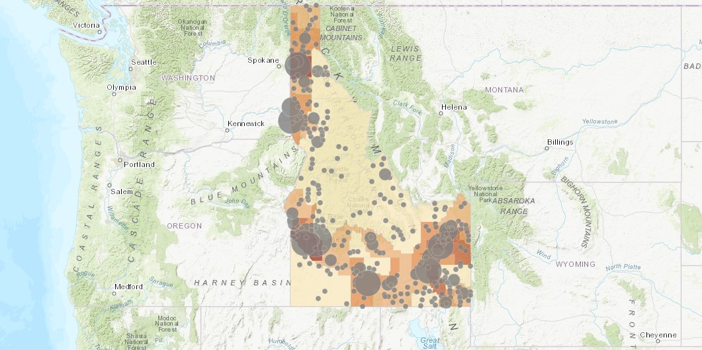
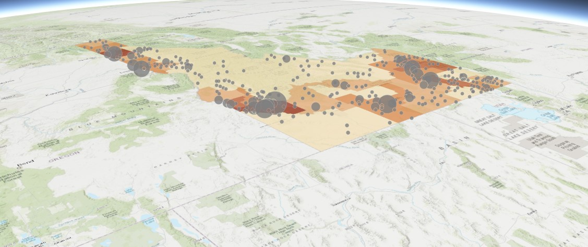
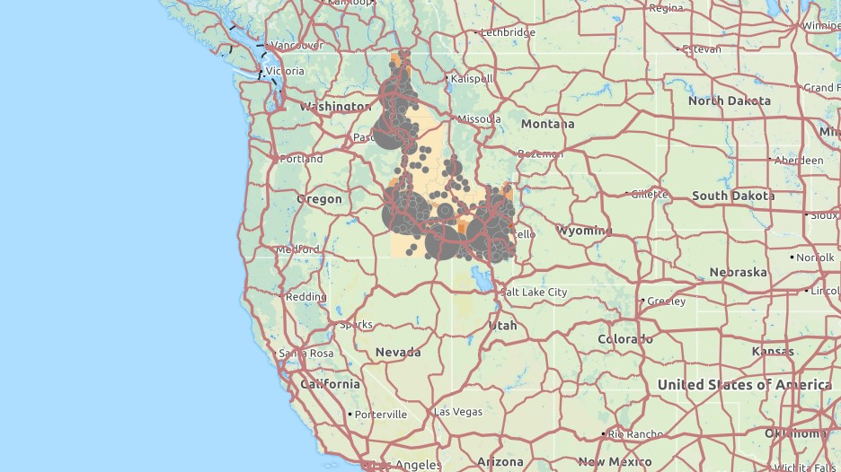
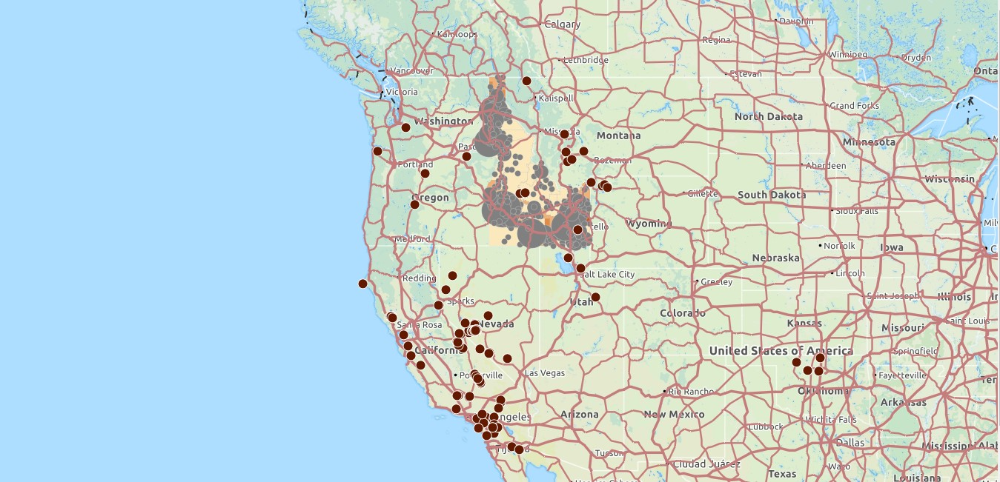
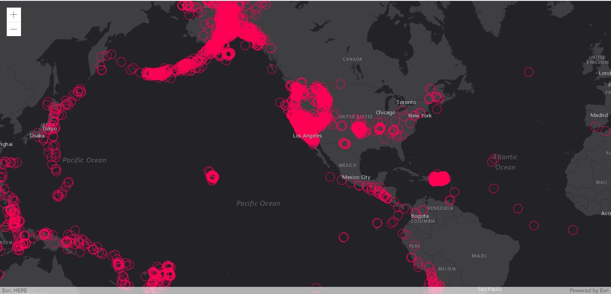
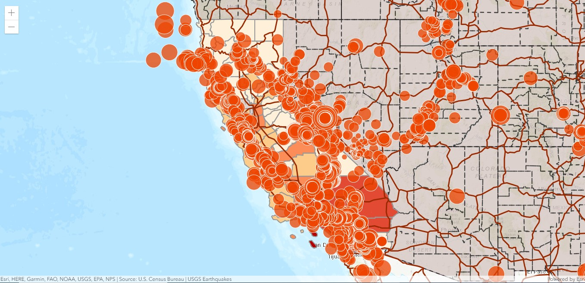

Lab 5 Files

Loading a map into a mapview

Loading a map into a scene

Changing basemap, adding a layer suing a portal item, and an url
Lab 6 files

Adding a CSV using a real-time feed

Adding data using an url and formatted as JSON
Lab 7 files

Visualizing layers usign the ESRI API part 3